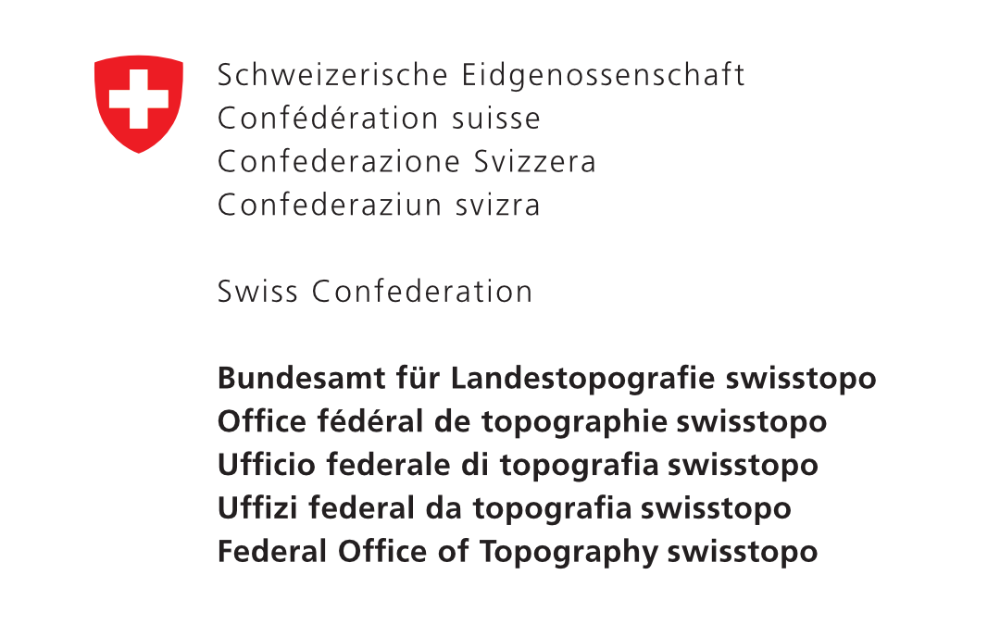
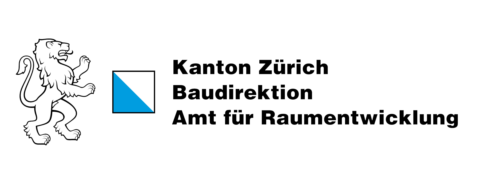

Im Einsatz bei
Trusted By




Unsere Kartierungslösungen verbinden traditionelle Vermessungsgenauigkeit mit modernster Technologie. Wir bieten massgeschneiderte Lösungen für Behörden, Unternehmen und Forschungseinrichtungen, die auf präzise Geodaten angewiesen sind.
Our mapping solutions combine traditional surveying accuracy with cutting-edge technology. We provide customized solutions for government agencies, businesses, and research institutions that rely on precise geodata.
Die Dira ProSuite optimiert Ihre Arbeitsabläufe und steigert die Effizienz erheblich. Automatisierte Workflows reduzieren manuelle Arbeitsschritte und ermöglichen es Ihren Teams, sich auf wertschöpfende Tätigkeiten zu konzentrieren.
The Dira ProSuite optimizes your workflows and significantly increases efficiency. Automated workflows reduce manual steps and allow your teams to focus on value-adding activities.
Übrigens, Dira ist Swahili für Kompass, ein altes arabisches Längenmass (ungefähr einen Meter) und steht in Verbindung mit Indira, einem Beinamen der hinduistischen Göttin der Schönheit.
By the way, Dira is Swahili for compass, an old arabic measure of length (about one metre), and associates with Indira, a byname of the Hindu goddess of beauty.